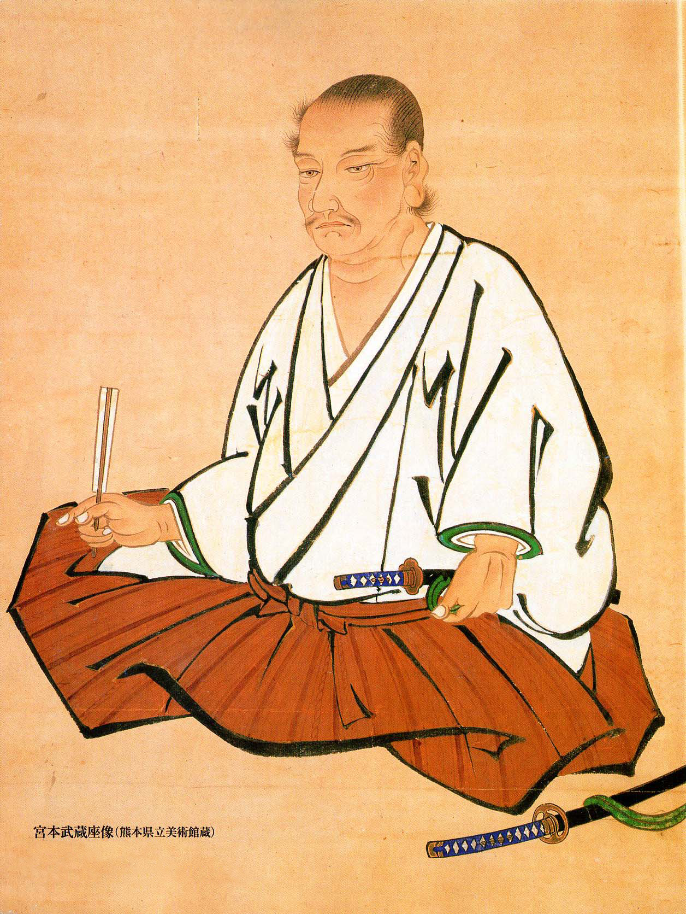

„Днес е победа над теб от вчера; утре е победата ти над по-низшите хора.“
На японски: „今日は昨日の我に勝ち、明日は下手に勝ち、後は上手に勝つ“
-Миямото Мусаши
Истинският напредък започва отвътре.
Единственият реален критерий за успех е да бъдеш по-дисциплиниран, по-спокоен и по-умел от човека, който си бил вчера.
На 19.11 се отбелязва Световният ден на философията.
В чест на този ден чрез QR кодове можете да откриете 20 различни философски цитата за деня.
